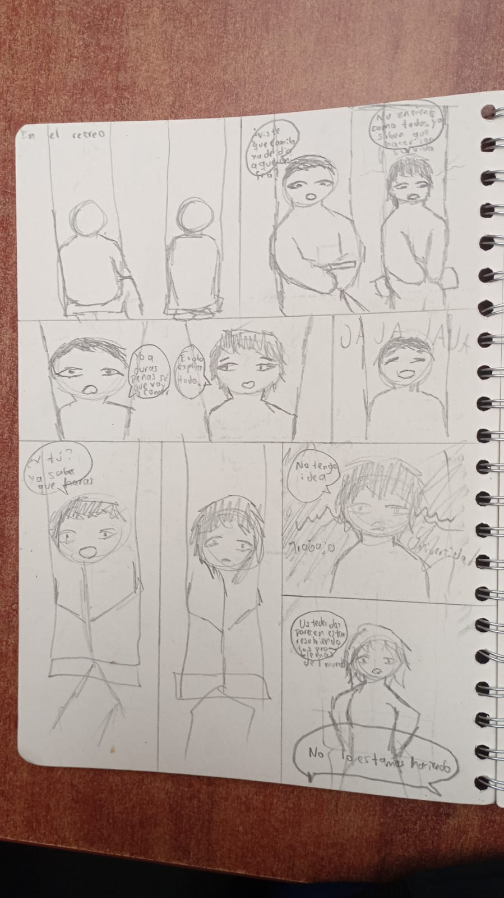
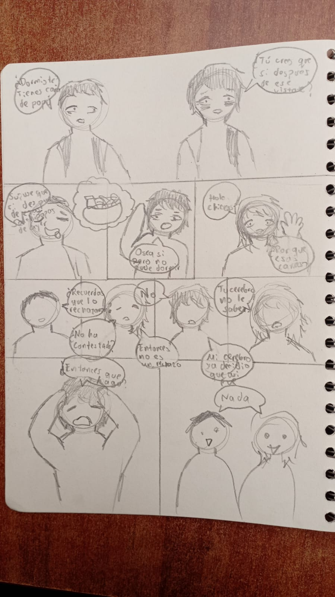
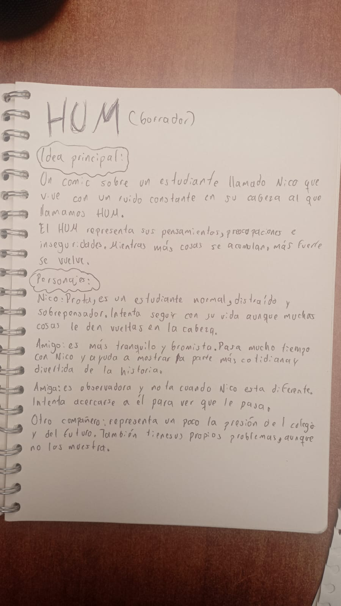
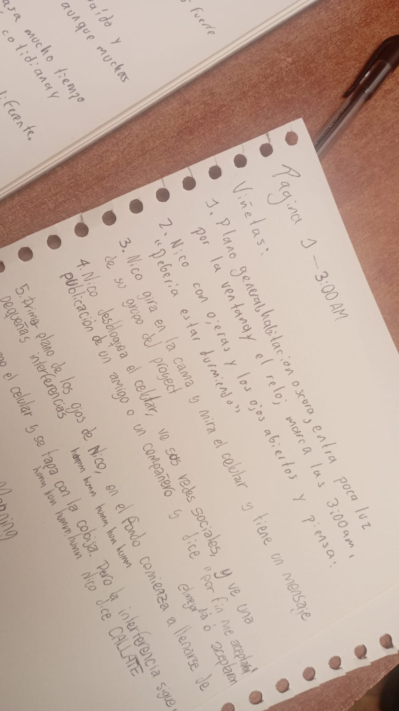
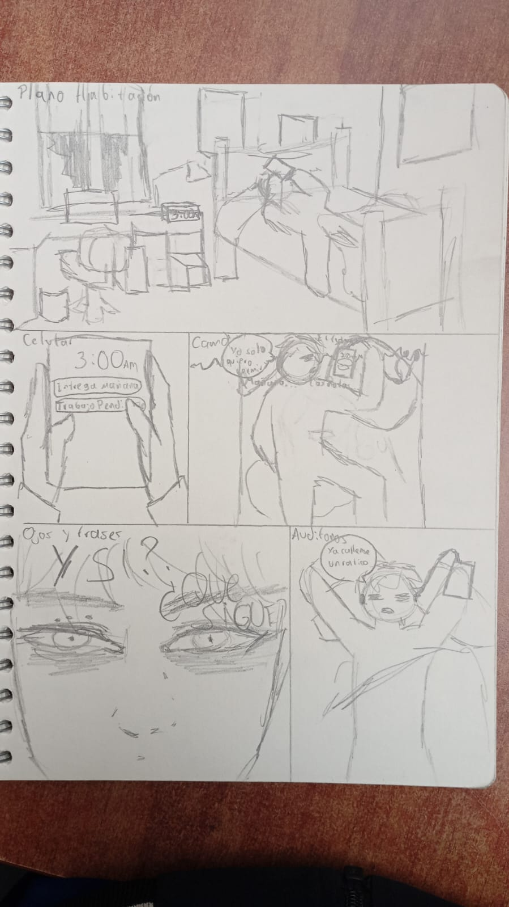
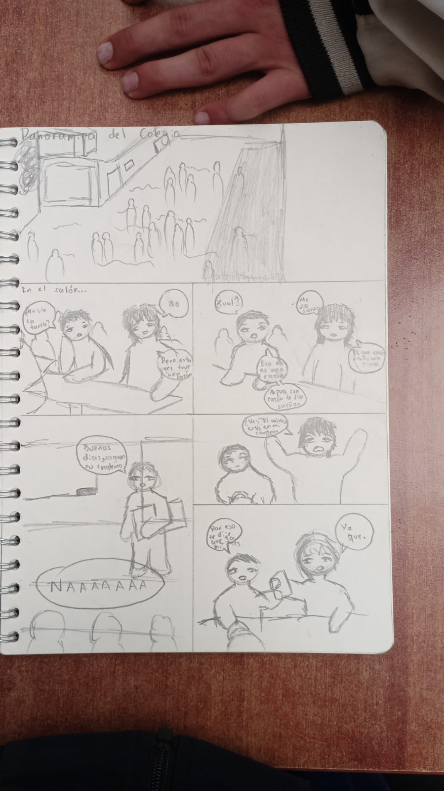
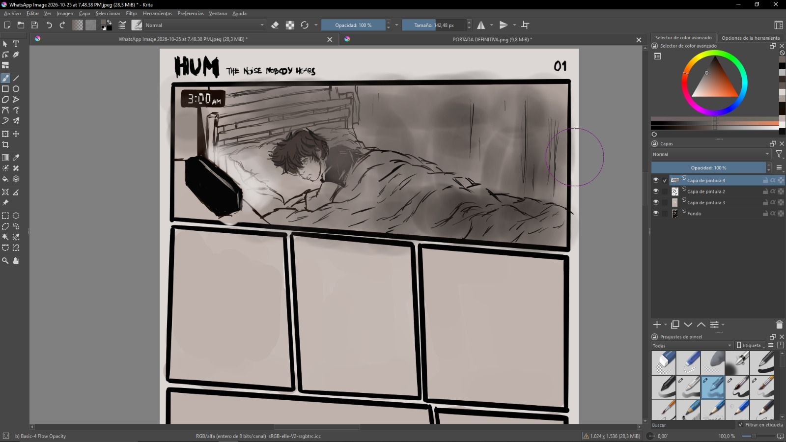
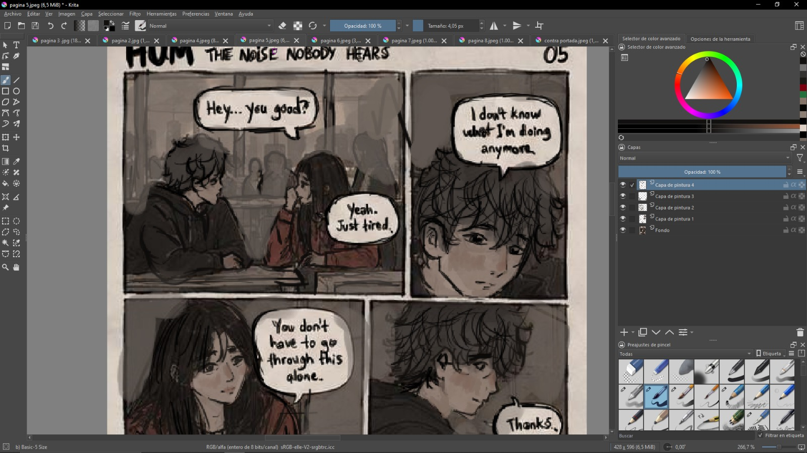
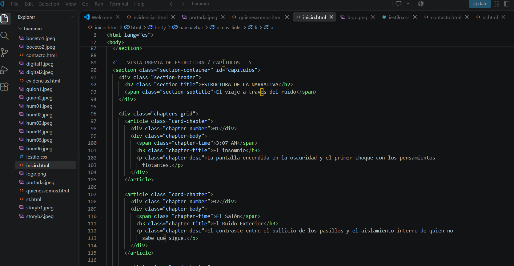
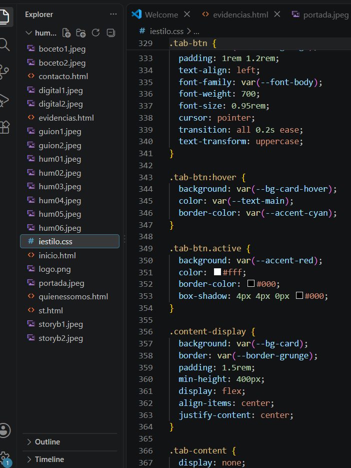

Lluvia de Ideas y Concepto HUM
Primeros acercamientos al zumbido mental, definición de la personalidad de Nico y estructuración del mensaje central del proyecto.


Explora el proceso creativo detrás del cómic y la plataforma web de HUM.
Primeros acercamientos al zumbido mental, definición de la personalidad de Nico y estructuración del mensaje central del proyecto.


Desarrollo de las páginas, diálogos entre Nico, Valeria y su entorno, marcando los momentos de mayor tensión del sobrepensamiento.


Planeación visual de las viñetas, encuadres y distribución espacial de las interferencias gráficas del HUM.


Proceso de dibujo, aplicación de la paleta de tonos oscuros, texturas imperfectas y estilo grunge.


Codificación en HTML y CSS, estructuración de las pestañas institucionales y diseño responsivo adaptado al concepto alternativo.


Cada etapa del proyecto refleja la investigación sobre la ansiedad juvenil y cómo traducirla visualmente al formato de historieta. Aquí guardamos las pruebas de diseño que validaron el resultado final de la obra.